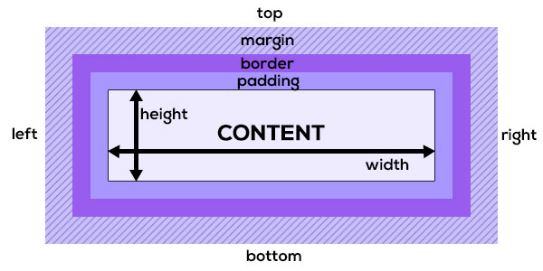

ceci est paragraphe
ceci est un autre paragraphe
Voici encore un autre paragraphe
Cliquez ici pour vous rendre sur la page d'accueil de Raph
Lien vers la page Articles qui ce trouve dans le sous-dossier Articles
Lien vers la page Contact qui ce trouve dans le sous-dossier Articles
Lien vers la page Archives qui se trouve dans le dossier Atricles/Archives
En HTML: on peut effectuer un retour à la ligne
grace à la balise "br/""
mais on peut aussi utiliser la balise "pre"pour formater un texte
ainsi que les espaces
rejoindre notre ancre"Ancre"
cet element est de type block
cet element de type block contient un element inline de type strong
Exemple d'un paragraphe dans un block div
La mise en forme passera par le div afin de comprendre comment cela fonctionne
Je veux mettre en rouge le mot rouge et en vert le mot vert
Testons les couleurs et la transparence grace au CSS
Il y a plusieurs manière d'affecter une couleur à du texte
la première est de nommer la couleur que contient la liste ci-dessous
Liste des 140 couleursle autre methode est de referencer une valeur hexadecimale dans ce format #dd5566
la troisieme methode est de referencer une valeur rgb dans ce format rgb(16, 80, 122)
la methode RGB a l'avantage d'avoir un paramètre d'opacité grace a rgba(16, 80, 122, 0.8)
le quatrieme parametre est l'opacité, valeur comprise entre 0 et 1, 0 correspond à transparent et 1 à opaque rgba(16, 80, 122, 0.2)
Il existe aussi le parametre opacity qui prend une valeur entre 0 et 1
le modele des boites
Pour comprendre le concept des boites
CONTENT est le centre de notre boite
padding est la marge interieure
border est la bordure
margin est la marge exterieure
les bordures
En CSS, les bordures ont de nombreux attributs
Il y a deux manières de proceder
la première est de definir les valeurs dans leurs attributs respectifs
par exemple : border-width: 5px; qui defini l'épaisseur de la bordure,
ensuite border-style : solid; qui defini le style de bordure,
puis border-color : #000000; qui defini la couleur de la bordure.
Toutefois, on peut le faire de cette manière aussi border : 5px solid #000000
Precisons que border : valeur; et border-width : valeur; donne le même resultat
Voici les diffents style de bordures en CSS
cette bordure est de type solid
cette bordure est de type dotted
cette bordure est de type double
cette bordure est de type dashed
cette bordure est de type groove
cette bordure est de type ridge
cette bordure est de type inset
cette bordure est de type outset
On peut aussi definir séparément chaque bordure
Dans cet exemple, on va definir un bordure droite et gauche de 5px
une bordure supérieure de 15px et une bordure de 10 px en bas
On peut aussi defini, un style, une couleur au choix pour chaque bordure
Les bordures arrondies
Pour arrondir les bordures, on utilisera border-radius : valeur, dans cet exemple valeur = 15px
On peut definir un arrondi different pour chaque cotes en utilisant border-top-left-radius,
en ajoutant top et left pour un arrondi en haut à gauche
Les marge interieure(padding)
le padding defini une marge interieure, comme dans le schema ici
la methode est padding : valeur, qui va ajouter la valeur à partir d'en haut à gauche
Si je defini padding : 25px, le le contenu sera deplacer de 25px vers la droite et vers le bas
et ajoute 25px en largeur et en hauteur à notre boite
Voici ce qu'il ce passe quand je mets le padding à 50px
On voit que le texte s'est déplace vers la droite et vers le bas de 50px,
ainsi que notre boite c'est agrandie vers la droite et vers le bas de 50px
Les marge interieure(padding) et les marges exterieures(margin)
le padding defini une marge interieure, comme dans le schema ici
les methodes sont padding : valeur, qui va ajouter la valeur à partir d'en haut à gauche
Si je defini padding : 25px, le le contenu sera deplacer de 25px vers la droite et vers le bas
et ajoute 25px en largeur et en hauteur à notre boite
On peut aussi definir les marges intérieures de cette façon :
padding : marge haut marge gauche marge bas marge droite
padding : 20px 40px 20px 40px
Les marges exterieures(margin)
le margin defini une marge exterieure, comme dans le schema ici
la methode est: margin : valeur, qui va deplacer notre boite vers le bas et la droite de notre page
Si je defini margin : 25px, la boite sera deplacer de 25px vers la droite et vers le bas
Dans l'exemple présent, je defini le margin à 25px
Les marges exterieures(margin)
Maintenant, mettons le texte dans une "boite" !
je ne garde que la valeur margin et supprime la valeur padding
le margin defini une marge exterieure, comme dans le schema ici
la methode est: margin : valeur, qui va deplacer notre boite vers le bas et la droite de notre page
Si je defini margin : 25px, la boite sera deplacer de 25px vers la droite et vers le bas
Attention, le deplacement influencera les autres "boites"
Dans l'exemple présent, je defini le margin à 25px
la propriété display
la propriété display va nous permettre de modifier la propriete ds objet de type inline-block,
afin de gerer la mise en page de nos éléments
Pour rappel les éléments de type inline, n'occupent que l'espace nécessaire,
tandis que les éléments de type block occupent toutes la largeur de la page
Avec display : inline,
je peux afficher
ces trois paragraphe cote à cote
la propriété display
Avec display : inline-block,
On va pouvoir gerer l'affichage cota à cote de type inline
et donner une dimension à nos éléments grace au type block
Pour l'exemple, je prends 2 paragraphes que je defini, le premier d'une largeur de 45%
le deuxieme, d'une largeur de 35%
l'espace restant est inferieure à 20%, car il faut prendre en compte les marges definient par le navigateur
Le premier paragraphe occupe 45% de la largeur du cadre
Le second paragraphe occupe 35% de la laregeur du cadre
L'espace restant est de 18%
La propriete position
La propriété position à 4 valeurs, static, relative, absolute, fixed
Elle permettent de positionner précisement les éléments dans notre page
la valeur static est la valeur par defaut, si elle est definie,
on ne peut plus utliser des paramètres top,bottom,...
Si j'applique une position : relative à ce paragraphe, et j'ajoute left : 50 px
On peut voir que ce paragraphe c'est deplacer de 50px vers la droite,
Si j'ajoute top : 5px, l'éléments sera deplacer de 5px vers le bas
La valeur fixed, fixe l'éléments sur la page même si on fait défiler la page
La valeur absolute, permet de positionner notre elements par rapport à sont parent
par exemple, je positionne un texte en bas à droite
Avec la propriété position, il y aussi la propriété z-index
qui va permettre de mettre en avant un élément
La propriété float
La propriété float va nous permettre de placer
un élément a gauche ou a droite.
Sachant qu'il faut prendre en compte la limite
de l'élément parent.
Dans cet exemple le cadre ce trouve à droite
avec la propriété float : right;
Ce cadre est à gauche
Ce cadre est à droite
La propriété clear
la propriété clear indique si un element peut être situé à coté de l'élément ou s'il doit être déplacé vers le bas